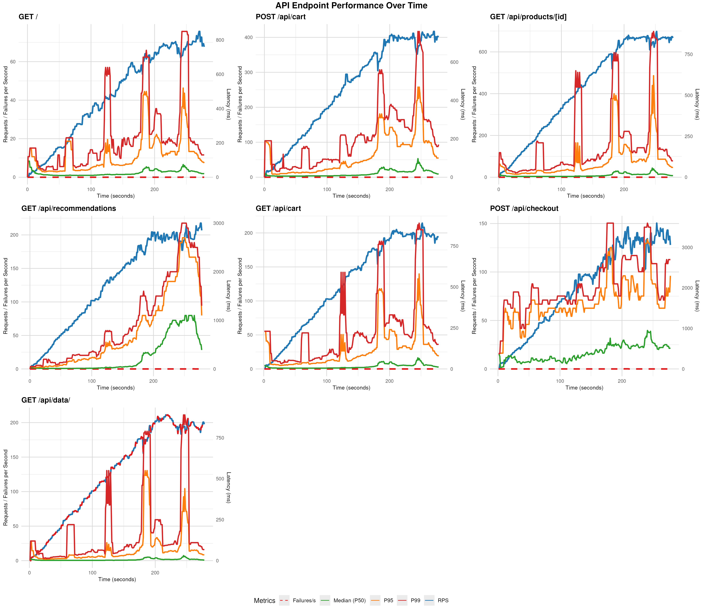
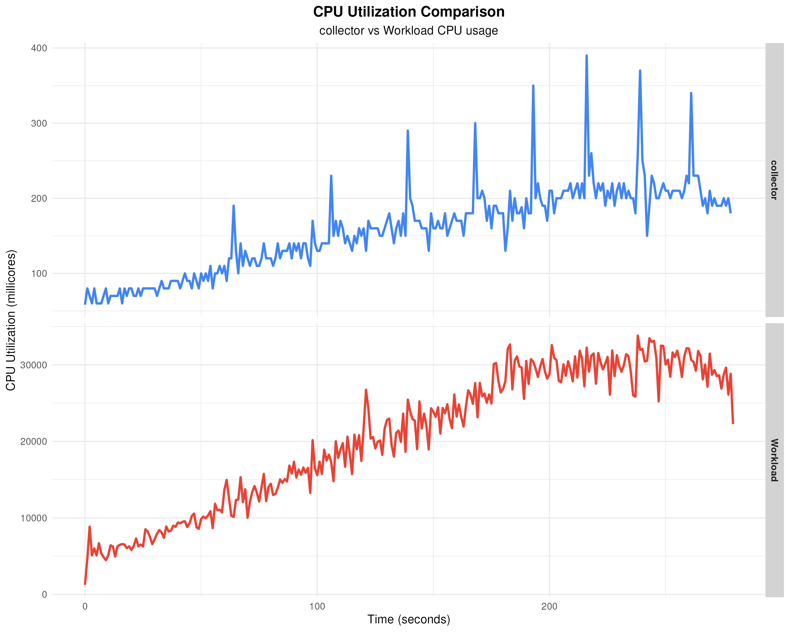
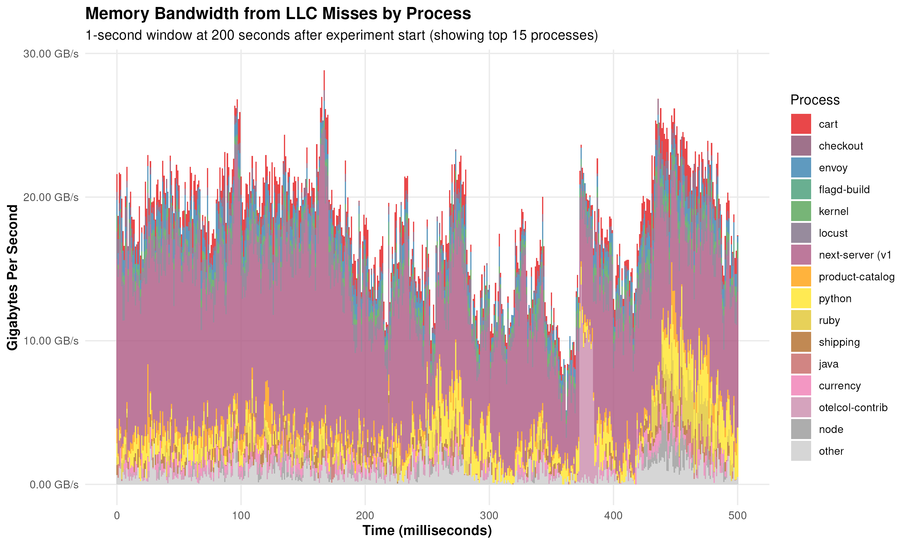
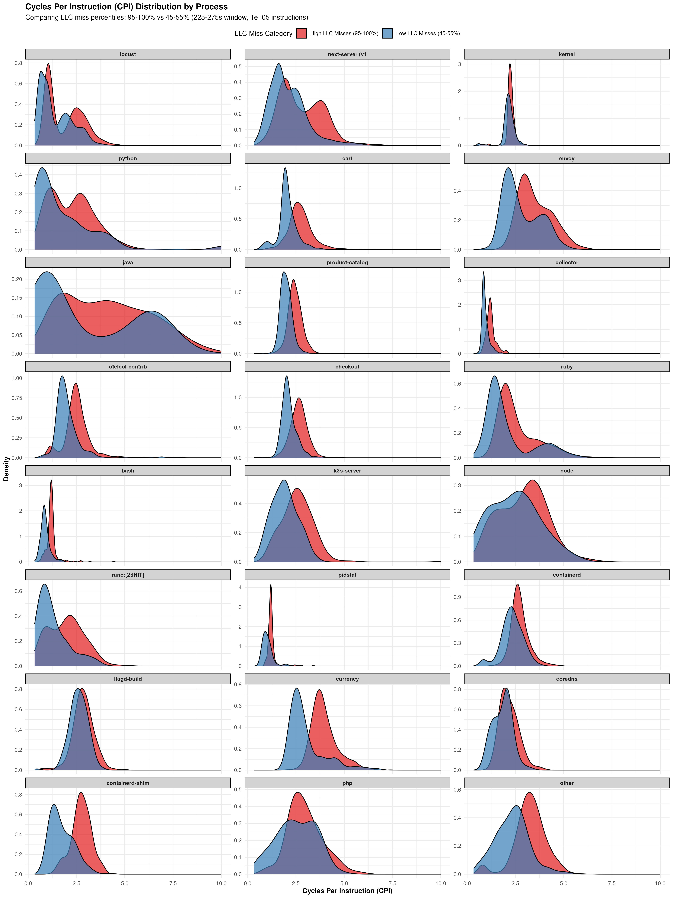
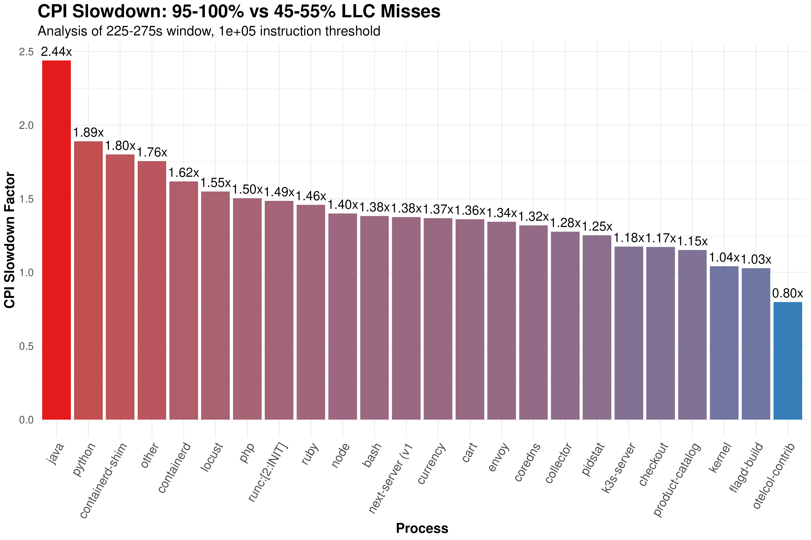

Memory Collector Benchmark Results
This page presents the latest benchmark results for the Memory Collector, demonstrating its performance characteristics and overhead when running in typical deployment scenarios.
Overview
The benchmark simulates a realistic production environment by gradually ramping up a load generator over 200 seconds, followed by a steady-state period to evaluate collector behavior under sustained load. This approach allows us to measure the collector's resource consumption patterns under various load conditions.
All results shown here are automatically published from the most recent successful benchmark run. The benchmark configuration may evolve over time, so specific parameters might differ slightly from those described in this documentation.
Workload Performance

This graph shows the overall performance of the test workload during the benchmark run, displaying: - Request rate (requests per second) - Median latency - P95 latency (95th percentile) - P99 latency (99th percentile)
Collector Resource Consumption
CPU Utilization

This graph displays two key metrics: 1. Collector userspace CPU consumption in millicores as the experiment progresses 2. Total CPU utilization of everything except the collector
From these measurements, we can calculate the collector's CPU overhead as a percentage of the total workload. The benchmark uses the pidstats utility to gather these measurements.
Memory Utilization

This graph shows the memory consumption of the collector over time. The collector processes data in "row groups," compressing measurements into an efficient representation before periodically flushing to storage. Memory usage typically stabilizes between 300-350MB during extended runs as the collection and flushing processes reach equilibrium.
eBPF Overhead
The benchmark captures eBPF overhead through sampling profiles, which are converted to flame graphs. To analyze the percentage of samples attributed to eBPF processing, look for the bpf_prog symbol in the flame graph:

Collected Data Examples
The collector stores measurements in Parquet format with a well-defined schema. Here are links to sample data and schema information:
- Simple Schema - Basic schema structure
- Sample Records (100) - 100 representative records
- First Records (Head) - First 100 records from the dataset
- Detailed Schema - Complete schema with column descriptions (note that this includes column descriptions that are repeated for each row group in the Parquet file)
Data Measured by the Collector
LLC Misses Over Time

This graph illustrates Last Level Cache (LLC) misses over a 500ms period, broken down by process. LLC misses are a key indicator of memory subsystem interference, helping identify potential noisy neighbors in the system.
Performance Slowdown Analysis
The benchmark analyzes the relationship between LLC misses and application efficiency by comparing Cycles Per Instruction (CPI) during periods of high cache contention versus normal operation:

This distribution shows CPI values across different levels of LLC miss activity for each process.

The slowdown graph quantifies the performance impact of high LLC miss rates by showing the ratio between average CPI during high cache miss periods compared to median cache miss periods. Higher values indicate greater performance degradation when cache contention occurs.